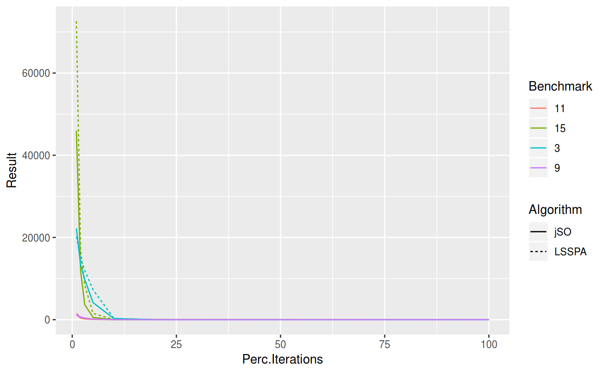
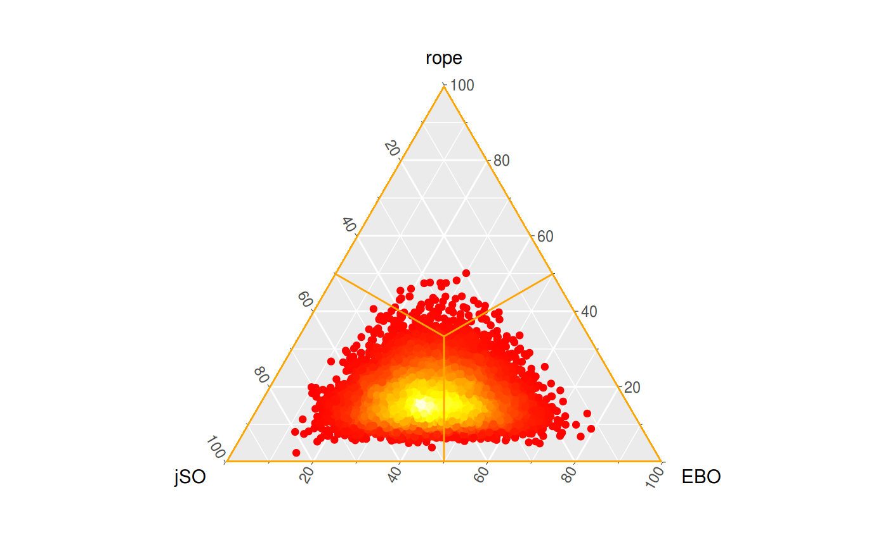
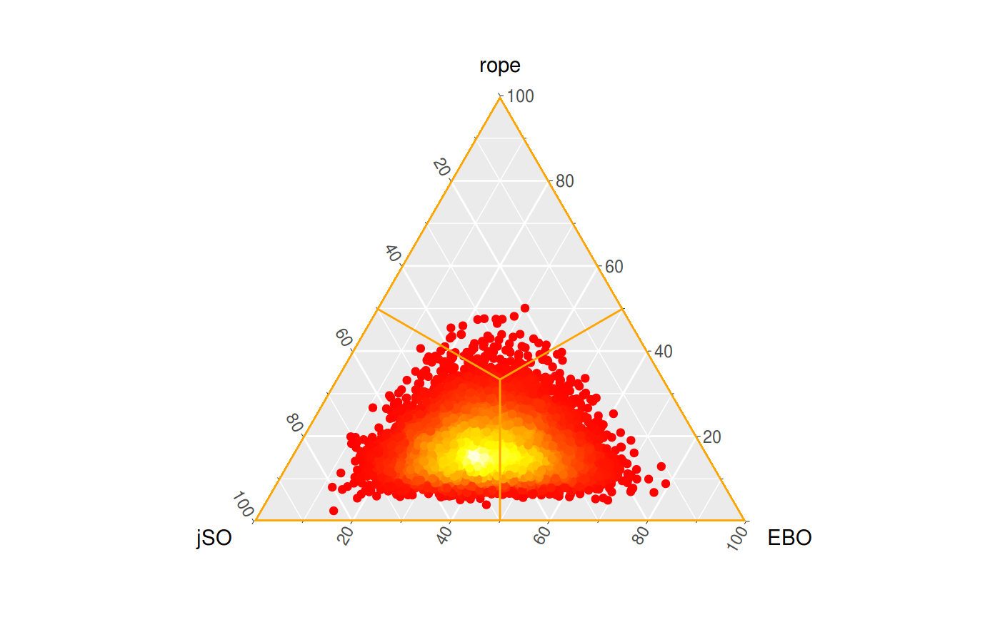
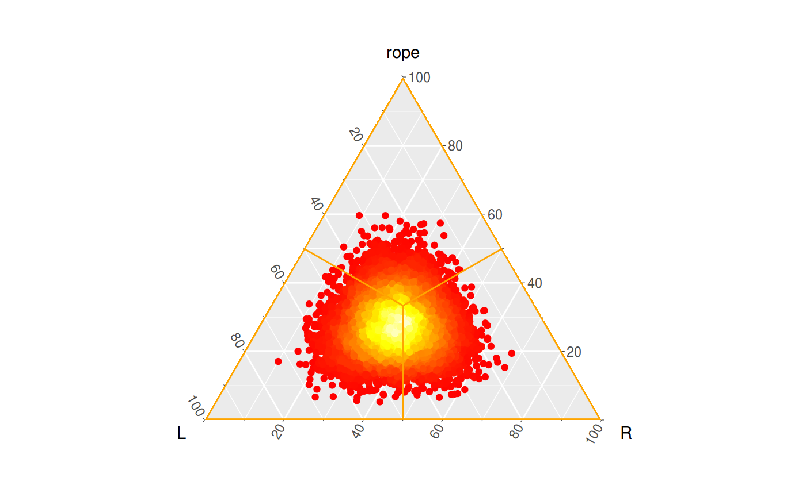
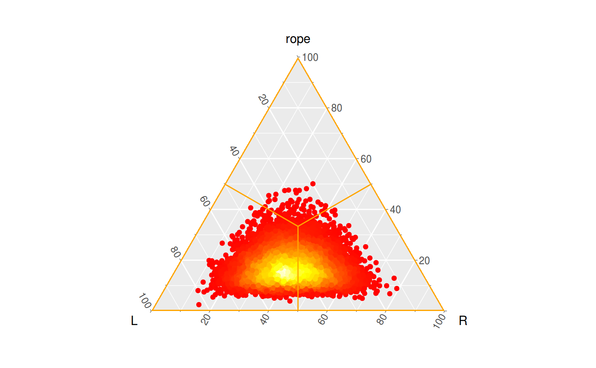

Statistical Analysis
StatisticalAnalysis.RmdParametric analysis
In this section we illustrate the application of the parametric tests to the comparison of algorithms in the study case of the competition of CEC2017. With this purpose, we use the results obtained at the end of the 100% of the steps and compute the mean among different iterations of each algorithm on each benchmark function.
Preliminars
The traditional parametric test used in the context of a comparison of multiple algorithms over multiple problems (benchmarks) is the ANOVA test. This test makes some assumptions that should be checked before it is performed: - The distribution of the results among different benchmarks is normal. - The standard deviation of results is equal.
Normality
shapiro.test <- split(cec17.final, cec17.final$Dimension) %>%
lapply(function(x) split(x, x$Algorithm) %>%
lapply(function(y) shapiro.test(y$Result)$p.value)) %>%
unlist() %>% matrix(ncol = 4, byrow = F) %>% as.data.frame()
AdjustFormatTable(shapiro.test,
colnames = paste("Dim.", levels(cec17.final$Dimension)),
rownames = levels(cec17.final$Algorithm), print.code = TRUE,
digits = -2, type = "latex")We can see that all the null hypotheses are rejected because the associated p-values are less than \(0.05\). This means that the mean results of the algorithms among the different iterations do not follow a normal distribution, as could be expected due to the different difficulty of the multiple benchmark functions throug the dimensions.
Homocedasticity
## % latex table generated in R 3.5.2 by xtable 1.8-3 package
## % Tue Mar 12 10:49:15 2019
## \begin{table}[ht]
## \centering
## \begin{tabular}{rllll}
## \hline
## & Dim. 10 & Dim. 30 & Dim. 50 & Dim. 100 \\
## \hline
## p.value & $0.39$ & $0.28$ & $0.31$ & $0.38$ \\
## \hline
## \end{tabular}
## \caption{Levene test for homocedasticity}
## \label{tab:levene}
## \end{table}Although normality is not satisfied, we check the homocedasticity for the different dimensions. As the \(p\)-value are greater than \(\alpha = 0.05\) we cannot reject the hypothesis of the equivalence of the variances.
| Dim. 10 | Dim. 30 | Dim. 50 | Dim. 100 | |
|---|---|---|---|---|
| p.value | \(0.92\) | \(0.94\) | \(0.35\) | \(0.36\) |
| Dim. 10 | Dim. 30 | Dim. 50 | Dim. 100 | |
|---|---|---|---|---|
| p.value | \(0.37\) | \(0.28\) | \(0.31\) | \(0.38\) |
We perform the ANOVA test and see how the equivalence of the means by algorithms can not be rejected for any dimensions, a circumstance that is consistent with the previous statements about the power of the ANOVA test when the assumption of the test are not fulfilled.
Non-parametric tests
In this section we perform the most popular tests in the field of the comparison of optimization algorithms. We continue using the aggregated results across the different runs at the end of the iterations, except for the Page test for the study of the convergence.
Classic tests
## Error in eval(expr, envir, enclos): objeto 'r' no encontrado## [[1]]
## K K2
## 11 16
##
## [[2]]
## R+ R-
## 202.5 232.5
##
## [[3]]
## WRank
## 627## % latex table generated in R 3.5.2 by xtable 1.8-3 package
## % Tue Mar 12 10:49:16 2019
## \begin{table}[ht]
## \centering
## \begin{tabular}{rllll}
## \hline
## & Dim. 10 & Dim. 30 & Dim. 50 & Dim. 100 \\
## \hline
## Sign & $0.44$ & $0.57$ & $0.14$ & $0.087$ \\
## Wilcoxon & $1$ & $1$ & $\mathbf{0.039}$ & $\mathbf{0.034}$ \\
## Wilcoxon Rank-Sum & $\mathbf{0.00036}$ & $\mathbf{0.0014}$ & $\mathbf{0.022}$ & $\mathbf{5.8 \cdot 10^{-05}}$ \\
## \hline
## \end{tabular}
## \caption{Non-parametric pairwise comparison between EBO and jSO}
## \label{tab:np-pairwise}
## \end{table}| Dim. 10 | Dim. 30 | Dim. 50 | Dim. 100 | |
|---|---|---|---|---|
| Friedman | \(\mathbf{8.5 \cdot 10^{-11}}\) | \(\mathbf{1.2 \cdot 10^{-10}}\) | \(\mathbf{1.4 \cdot 10^{-10}}\) | \(\mathbf{1.3 \cdot 10^{-10}}\) |
| Friedman AR | \(\mathbf{0}\) | \(\mathbf{0}\) | \(\mathbf{0}\) | \(\mathbf{0}\) |
| Iman-Davenport | \(\mathbf{0}\) | \(\mathbf{0}\) | \(\mathbf{0}\) | \(\mathbf{0}\) |
| Quade | \(\mathbf{3.3 \cdot 10^{-36}}\) | \(\mathbf{6.6 \cdot 10^{-62}}\) | \(\mathbf{1.6 \cdot 10^{-54}}\) | \(\mathbf{1.7 \cdot 10^{-62}}\) |
| We can see how th | e four tests reject the null hyp | otheses, it is, the | ||
| equivalence of th | e medians of the results of the | different | ||
| benchmarks. We mu | st have in mind that a compariso | n between thirteen | ||
| algorithms is not | the recommended procedure if we | want to compare our | ||
| proposal, but we | should include in the comparison | the state-of-the-art | ||
| algorithms, becau | se the inclusion of an algorithm | with lower | ||
| performance will | be reflected in the rejection of | the null hypothesis | ||
| while that would | be not rejected if this bogus al | gorithm would not | ||
| have been include | d. |
Post-hoc tests
Then, we proceed to perform the post-hoc tests in order to determinate the location of the differences between these algorithms. We use the modification of the classic non-parametric tests to obtain the \(p\)-value associated with each hypothesis, although we should adjust these \(p\)-values with a post-hoc procedure.
Control algorithm
To illustrate this, we first suppose that we are in an One versus all scenario where we are presenting our algorithm (we are going to use EBOwithCMAR, the winner of the CEC’2017 competition). The possible approach here, as in the rest of the analysis are:
- Considering all the results in the different dimensions as if they were different function or benchmarks, we would only obtain a single \(p\)-value for the comparison between EBO-CMAR with each contestant algorithm. The adjusted \(p\)-values are shown in the following table for the Friedman, Friedman Aligned-Rank and Quade test.
## % latex table generated in R 3.5.2 by xtable 1.8-3 package
## % Tue Mar 12 10:49:16 2019
## \begin{table}[ht]
## \centering
## \begin{tabular}{rlll}
## \hline
## & Friedman & FriedmanAR & Quade \\
## \hline
## DES & $0.26$ & $0.26$ & $0.99$ \\
## DYYPO & $\mathbf{0}$ & $\mathbf{0}$ & $\mathbf{0.00029}$ \\
## IDEN & $\mathbf{0.002}$ & $\mathbf{0.002}$ & $0.75$ \\
## jSO & $0.93$ & $0.93$ & $0.99$ \\
## LSSPA & $0.74$ & $0.74$ & $0.99$ \\
## MM & $0.81$ & $0.81$ & $0.99$ \\
## MOS11 & $\mathbf{0}$ & $\mathbf{0}$ & $\mathbf{0.0013}$ \\
## MOS12 & $\mathbf{0}$ & $\mathbf{0}$ & $\mathbf{1.7 \cdot 10^{-05}}$ \\
## MOS13 & $\mathbf{0}$ & $\mathbf{0}$ & $\mathbf{0.00065}$ \\
## PPSO & $\mathbf{0}$ & $\mathbf{0}$ & $\mathbf{0.0013}$ \\
## RBI & $\mathbf{0.012}$ & $\mathbf{0.012}$ & $0.75$ \\
## TFL & $\mathbf{0}$ & $\mathbf{0}$ & $\mathbf{4.8 \cdot 10^{-05}}$ \\
## LSCNE & $0.93$ & $0.93$ & $0.99$ \\
## EBO & & & \\
## \hline
## \end{tabular}
## \caption{Post-Hoc Non-Parametric tests with control algorithm}
## \label{tab:np-tests-ph-control}
## \end{table}-
If we wanted to show that the differences between the algorithms also persist in each group of results obtained across the different dimensions, we should perform these tests repeatedly and apply later the appropiate post-hoc procedure. In the following table we show the adjusted \(p\)-value obtained.
Di m 10 Di m 30 Di m 50 Di m 100 DES \(\mathbf{0.00093}\) \(0.22\) \(\mathbf{0.00017}\) \(0.65\) DYYPO \(\mathbf{5.1 \cdot 10^{-07}}\) \(\mathbf{1.7 \cdot 10^{-11}}\) \(0.81\) \(\mathbf{0}\) IDEN \(0.87\) \(0.21\) \(0.46\) \(\mathbf{4.8 \cdot 10^{-07}}\) jSO \(0.88\) \(0.93\) \(\mathbf{1.9 \cdot 10^{-05}}\) \(\mathbf{0.02}\) LSSPA \(0.59\) \(0.93\) \(\mathbf{2 \cdot 10^{-07}}\) \(0.77\) MM \(0.93\) \(0.81\) \(\mathbf{0.0052}\) \(\mathbf{0.027}\) MOS11 \(\mathbf{0.00027}\) \(\mathbf{2.6 \cdot 10^{-08}}\) \(0.91\) \(\mathbf{1.7 \cdot 10^{-11}}\) MOS12 \(\mathbf{0}\) \(\mathbf{1 \cdot 10^{-14}}\) \(0.16\) \(\mathbf{0}\) MOS13 \(\mathbf{6.6 \cdot 10^{-09}}\) \(\mathbf{4.5 \cdot 10^{-11}}\) \(0.55\) \(\mathbf{4.1 \cdot 10^{-13}}\) PPSO \(\mathbf{3.5 \cdot 10^{-05}}\) \(\mathbf{2.9 \cdot 10^{-09}}\) \(0.55\) \(\mathbf{0}\) RBI \(\mathbf{0.036}\) \(0.18\) \(\mathbf{0.029}\) \(\mathbf{0.0073}\) TFL \(\mathbf{2.4 \cdot 10^{-09}}\) \(\mathbf{6.1 \cdot 10^{-11}}\) \(0.55\) \(\mathbf{0}\) LSCNE \(0.28\) \(0.93\) \(\mathbf{4 \cdot 10^{-05}}\) \(0.18\) EBO NA NA NA NA
\(n\) versus \(n\) scenario
In the scenario of the statistical analysis of the results obtained during a competition, we would not focus in the comparison between the results of a single algorithm but we would make all the posible pairs, so we would not use the control algorithm.
As in the scenario with a control algorithm, we could be interested in the global comparison between all the posible pairs of algorithm considering the results in the different dimensions as if they came from the same distribution or pay attention to the differences between the algorithms in the different contexts according to the dimension.
| DES | DYYPO | IDEN | jSO | LSSPA | MM | MOS11 | MOS12 | MOS13 | PPSO | RBI | TFL | LSCNE | EBO | |
|---|---|---|---|---|---|---|---|---|---|---|---|---|---|---|
| DES | NA | \(1\) | \(0.22\) | \(0.17\) | \(0.77\) | \(0.057\) | \(1\) | \(\mathbf{9 \cdot 10^{-05}}\) | \(0.86\) | \(1\) | \(1\) | \(0.75\) | \(0.99\) | \(\mathbf{0.004}\) |
| DYYPO | \(1\) | NA | \(\mathbf{0.00084}\) | \(\mathbf{0.00055}\) | \(\mathbf{0.014}\) | \(\mathbf{9.7 \cdot 10^{-05}}\) | \(1\) | \(0.055\) | \(1\) | \(1\) | \(0.64\) | \(1\) | \(0.089\) | \(\mathbf{2.3 \cdot 10^{-06}}\) |
| IDEN | \(0.22\) | \(\mathbf{0.00084}\) | NA | \(1\) | \(1\) | \(1\) | \(0.097\) | \(\mathbf{2 \cdot 10^{-13}}\) | \(\mathbf{2.4 \cdot 10^{-05}}\) | \(\mathbf{0.022}\) | \(0.95\) | \(\mathbf{1 \cdot 10^{-05}}\) | \(1\) | \(1\) |
| jSO | \(0.17\) | \(\mathbf{0.00055}\) | \(1\) | NA | \(1\) | \(1\) | \(0.074\) | \(\mathbf{1.2 \cdot 10^{-13}}\) | \(\mathbf{1.5 \cdot 10^{-05}}\) | \(\mathbf{0.015}\) | \(0.93\) | \(\mathbf{6.2 \cdot 10^{-06}}\) | \(1\) | \(1\) |
| LSSPA | \(0.77\) | \(\mathbf{0.014}\) | \(1\) | \(1\) | NA | \(1\) | \(0.53\) | \(\mathbf{3.6 \cdot 10^{-11}}\) | \(\mathbf{0.00063}\) | \(0.18\) | \(1\) | \(\mathbf{0.00031}\) | \(1\) | \(0.99\) |
| MM | \(0.057\) | \(\mathbf{9.7 \cdot 10^{-05}}\) | \(1\) | \(1\) | \(1\) | NA | \(\mathbf{0.021}\) | \(\mathbf{0}\) | \(\mathbf{2 \cdot 10^{-06}}\) | \(\mathbf{0.0036}\) | \(0.68\) | \(\mathbf{7.9 \cdot 10^{-07}}\) | \(1\) | \(1\) |
| MOS11 | \(1\) | \(1\) | \(0.097\) | \(0.074\) | \(0.53\) | \(\mathbf{0.021}\) | NA | \(\mathbf{0.00035}\) | \(0.97\) | \(1\) | \(1\) | \(0.93\) | \(0.93\) | \(\mathbf{0.0012}\) |
| MOS12 | \(\mathbf{9 \cdot 10^{-05}}\) | \(0.055\) | \(\mathbf{2 \cdot 10^{-13}}\) | \(\mathbf{1.2 \cdot 10^{-13}}\) | \(\mathbf{3.6 \cdot 10^{-11}}\) | \(\mathbf{0}\) | \(\mathbf{0.00035}\) | NA | \(0.41\) | \(\mathbf{0.0026}\) | \(\mathbf{3.4 \cdot 10^{-07}}\) | \(0.56\) | \(\mathbf{1.7 \cdot 10^{-09}}\) | \(\mathbf{0}\) |
| MOS13 | \(0.86\) | \(1\) | \(\mathbf{2.4 \cdot 10^{-05}}\) | \(\mathbf{1.5 \cdot 10^{-05}}\) | \(\mathbf{0.00063}\) | \(\mathbf{2 \cdot 10^{-06}}\) | \(0.97\) | \(0.41\) | NA | \(1\) | \(0.12\) | \(1\) | \(\mathbf{0.0064}\) | \(\mathbf{2.8 \cdot 10^{-08}}\) |
| PPSO | \(1\) | \(1\) | \(\mathbf{0.022}\) | \(\mathbf{0.015}\) | \(0.18\) | \(\mathbf{0.0036}\) | \(1\) | \(\mathbf{0.0026}\) | \(1\) | NA | \(0.99\) | \(1\) | \(0.61\) | \(\mathbf{0.00015}\) |
| RBI | \(1\) | \(0.64\) | \(0.95\) | \(0.93\) | \(1\) | \(0.68\) | \(1\) | \(\mathbf{3.4 \cdot 10^{-07}}\) | \(0.12\) | \(0.99\) | NA | \(0.074\) | \(1\) | \(0.15\) |
| TFL | \(0.75\) | \(1\) | \(\mathbf{1 \cdot 10^{-05}}\) | \(\mathbf{6.2 \cdot 10^{-06}}\) | \(\mathbf{0.00031}\) | \(\mathbf{7.9 \cdot 10^{-07}}\) | \(0.93\) | \(0.56\) | \(1\) | \(1\) | \(0.074\) | NA | \(\mathbf{0.0034}\) | \(\mathbf{1 \cdot 10^{-08}}\) |
| LSCNE | \(0.99\) | \(0.089\) | \(1\) | \(1\) | \(1\) | \(1\) | \(0.93\) | \(\mathbf{1.7 \cdot 10^{-09}}\) | \(\mathbf{0.0064}\) | \(0.61\) | \(1\) | \(\mathbf{0.0034}\) | NA | \(0.77\) |
| EBO | \(\mathbf{0.004}\) | \(\mathbf{2.3 \cdot 10^{-06}}\) | \(1\) | \(1\) | \(0.99\) | \(1\) | \(\mathbf{0.0012}\) | \(\mathbf{0}\) | \(\mathbf{2.8 \cdot 10^{-08}}\) | \(\mathbf{0.00015}\) | \(0.15\) | \(\mathbf{1 \cdot 10^{-08}}\) | \(0.77\) | NA |
| DES | DYYPO | IDEN | jSO | LSSPA | MM | MOS11 | MOS12 | MOS13 | PPSO | RBI | TFL | LSCNE | EBO | |
|---|---|---|---|---|---|---|---|---|---|---|---|---|---|---|
| DES | NA | \(0.18\) | \(\mathbf{0.0049}\) | \(\mathbf{0.0036}\) | \(\mathbf{0.032}\) | \(\mathbf{0.0011}\) | \(0.8\) | \(\mathbf{1.8 \cdot 10^{-06}}\) | \(\mathbf{0.043}\) | \(0.52\) | \(0.37\) | \(\mathbf{0.029}\) | \(0.1\) | \(\mathbf{7.7 \cdot 10^{-05}}\) |
| DYYPO | \(0.18\) | NA | \(\mathbf{1.6 \cdot 10^{-05}}\) | \(\mathbf{1.1 \cdot 10^{-05}}\) | \(\mathbf{0.00025}\) | \(\mathbf{2 \cdot 10^{-06}}\) | \(0.28\) | \(\mathbf{0.001}\) | \(0.52\) | \(0.49\) | \(\mathbf{0.021}\) | \(0.44\) | \(\mathbf{0.0018}\) | \(\mathbf{5.7 \cdot 10^{-08}}\) |
| IDEN | \(\mathbf{0.0049}\) | \(\mathbf{1.6 \cdot 10^{-05}}\) | NA | \(0.93\) | \(0.55\) | \(0.68\) | \(\mathbf{0.002}\) | \(\mathbf{4 \cdot 10^{-14}}\) | \(\mathbf{5.4 \cdot 10^{-07}}\) | \(\mathbf{0.0004}\) | \(0.069\) | \(\mathbf{2.3 \cdot 10^{-07}}\) | \(0.3\) | \(0.32\) |
| jSO | \(\mathbf{0.0036}\) | \(\mathbf{1.1 \cdot 10^{-05}}\) | \(0.93\) | NA | \(0.5\) | \(0.74\) | \(\mathbf{0.0014}\) | \(\mathbf{2.7 \cdot 10^{-14}}\) | \(\mathbf{3.3 \cdot 10^{-07}}\) | \(\mathbf{0.00028}\) | \(0.058\) | \(\mathbf{1.4 \cdot 10^{-07}}\) | \(0.26\) | \(0.35\) |
| LSSPA | \(\mathbf{0.032}\) | \(\mathbf{0.00025}\) | \(0.55\) | \(0.5\) | NA | \(0.33\) | \(\mathbf{0.015}\) | \(\mathbf{3.3 \cdot 10^{-12}}\) | \(\mathbf{1.2 \cdot 10^{-05}}\) | \(\mathbf{0.004}\) | \(0.23\) | \(\mathbf{6.1 \cdot 10^{-06}}\) | \(0.63\) | \(0.1\) |
| MM | \(\mathbf{0.0011}\) | \(\mathbf{2 \cdot 10^{-06}}\) | \(0.68\) | \(0.74\) | \(0.33\) | NA | \(\mathbf{0.00038}\) | \(\mathbf{0}\) | \(\mathbf{5 \cdot 10^{-08}}\) | \(\mathbf{6.8 \cdot 10^{-05}}\) | \(\mathbf{0.024}\) | \(\mathbf{2.2 \cdot 10^{-08}}\) | \(0.14\) | \(0.53\) |
| MOS11 | \(0.8\) | \(0.28\) | \(\mathbf{0.002}\) | \(\mathbf{0.0014}\) | \(\mathbf{0.015}\) | \(\mathbf{0.00038}\) | NA | \(\mathbf{7.1 \cdot 10^{-06}}\) | \(0.079\) | \(0.69\) | \(0.26\) | \(0.058\) | \(0.058\) | \(\mathbf{2.2 \cdot 10^{-05}}\) |
| MOS12 | \(\mathbf{1.8 \cdot 10^{-06}}\) | \(\mathbf{0.001}\) | \(\mathbf{4 \cdot 10^{-14}}\) | \(\mathbf{2.7 \cdot 10^{-14}}\) | \(\mathbf{3.3 \cdot 10^{-12}}\) | \(\mathbf{0}\) | \(\mathbf{7.1 \cdot 10^{-06}}\) | NA | \(\mathbf{0.011}\) | \(\mathbf{4.9 \cdot 10^{-05}}\) | \(\mathbf{1 \cdot 10^{-08}}\) | \(\mathbf{0.017}\) | \(\mathbf{8.8 \cdot 10^{-11}}\) | \(\mathbf{0}\) |
| MOS13 | \(\mathbf{0.043}\) | \(0.52\) | \(\mathbf{5.4 \cdot 10^{-07}}\) | \(\mathbf{3.3 \cdot 10^{-07}}\) | \(\mathbf{1.2 \cdot 10^{-05}}\) | \(\mathbf{5 \cdot 10^{-08}}\) | \(0.079\) | \(\mathbf{0.011}\) | NA | \(0.18\) | \(\mathbf{0.0024}\) | \(0.88\) | \(\mathbf{0.00012}\) | \(\mathbf{1 \cdot 10^{-09}}\) |
| PPSO | \(0.52\) | \(0.49\) | \(\mathbf{0.0004}\) | \(\mathbf{0.00028}\) | \(\mathbf{0.004}\) | \(\mathbf{6.8 \cdot 10^{-05}}\) | \(0.69\) | \(\mathbf{4.9 \cdot 10^{-05}}\) | \(0.18\) | NA | \(0.12\) | \(0.14\) | \(\mathbf{0.019}\) | \(\mathbf{3.2 \cdot 10^{-06}}\) |
| RBI | \(0.37\) | \(\mathbf{0.021}\) | \(0.069\) | \(0.058\) | \(0.23\) | \(\mathbf{0.024}\) | \(0.26\) | \(\mathbf{1 \cdot 10^{-08}}\) | \(\mathbf{0.0024}\) | \(0.12\) | NA | \(\mathbf{0.0014}\) | \(0.47\) | \(\mathbf{0.0031}\) |
| TFL | \(\mathbf{0.029}\) | \(0.44\) | \(\mathbf{2.3 \cdot 10^{-07}}\) | \(\mathbf{1.4 \cdot 10^{-07}}\) | \(\mathbf{6.1 \cdot 10^{-06}}\) | \(\mathbf{2.2 \cdot 10^{-08}}\) | \(0.058\) | \(\mathbf{0.017}\) | \(0.88\) | \(0.14\) | \(\mathbf{0.0014}\) | NA | \(\mathbf{6.4 \cdot 10^{-05}}\) | \(\mathbf{4.2 \cdot 10^{-10}}\) |
| LSCNE | \(0.1\) | \(\mathbf{0.0018}\) | \(0.3\) | \(0.26\) | \(0.63\) | \(0.14\) | \(0.058\) | \(\mathbf{8.8 \cdot 10^{-11}}\) | \(\mathbf{0.00012}\) | \(\mathbf{0.019}\) | \(0.47\) | \(\mathbf{6.4 \cdot 10^{-05}}\) | NA | \(\mathbf{0.033}\) |
| EBO | \(\mathbf{7.7 \cdot 10^{-05}}\) | \(\mathbf{5.7 \cdot 10^{-08}}\) | \(0.32\) | \(0.35\) | \(0.1\) | \(0.53\) | \(\mathbf{2.2 \cdot 10^{-05}}\) | \(\mathbf{0}\) | \(\mathbf{1 \cdot 10^{-09}}\) | \(\mathbf{3.2 \cdot 10^{-06}}\) | \(\mathbf{0.0031}\) | \(\mathbf{4.2 \cdot 10^{-10}}\) | \(\mathbf{0.033}\) | NA |
Convergence test
For the comparison of the convergence of two algorithms, we use the mean result acrossthe different runs for each benchmark function of two algorithms. This results could be equally extended using the convenient adjustments. It is relevant to note that the algorithms EBOwithCMAR (first classified) and LSHADE-cnEpSin (third classified) do not provide their partial results, so we compare here the convergence of the jSO and LSHADE_SPACMA algorithms in the competition for the 10 dimension scenario, where the null hypothesis of LSHADE_SPACMA cannot be rejected and 50 dimension scenario.

## Warning in Ops.factor(left, right): '-' not meaningful for factors
## Warning in Ops.factor(left, right): '-' not meaningful for factors
## \begin{table}[]
## \centering
## \caption{Page test}
## \begin{tabular}{lll}
## \hline
## \multicolumn{3}{c}{Page} \\ \hline
##
## \multirow{1}{*}{data.name}
## & & -convergence.comparison.lshade + convergence.comparison.jso- \\ \hline
## \multirow{1}{*}{statistic}
## & L & 24171.00 \\ \hline
## \multirow{1}{*}{p.value}
## & Asymptotic pvalue & 4.372e-05 \\ \hline
## \end{tabular}
## \end{table}## $data.name
## [1] "convergence.comparison.jso - convergence.comparison.dyypo-"
##
## $statistic
## L
## 25730
##
## $p.value
## Asymptotic pvalue
## 0
##
## $method
## [1] "Page"## $data.name
## [1] "-convergence.comparison.jso + convergence.comparison.dyypo-"
##
## $statistic
## L
## 19945
##
## $p.value
## Asymptotic pvalue
## 1
##
## $method
## [1] "Page"Confidence Intervals and Confidence Curves
In this Section we show the use of confidence intervals and confidence curves in the comparison of optimization results. First, we have to warn that these comparisons only take care of two algorithm at each time, and a post-hoc correction would be needed if the comparison involved a greater number of algorithms as we are going to see in the following examples.
- We suppose that we want to compare the final and mean results of the two first classified algorithms in the benchmark function for the 10 dimension. Then, we select in the dataset the corresponding data and obtain the following result.
As the 0 effect is not included in the Non-parametric confidence interval, the null hypothesis is then rejected, although the interval is very wide, so we have not much certainty about that. If we only had done the Wilcoxon test, we would have obtained the associated \(p\)-value, and the null hypothesis would be also rejected, so the difference between the medians are detected with both methods. If we look at the confidence curve, we can reject the classic null hypothesis if the intersection of the vertical line at the 0 level and the horizontal line at the \(\alpha\) value remains under the curve.
## \begin{table}[]
## \centering
## \caption{Wilcoxon test}
## \begin{tabular}{lll}
## \hline
## \multicolumn{3}{c}{Wilcoxon} \\ \hline
##
## \multirow{1}{*}{data.name}
## & & conf.interval.matrix \\ \hline
## \multirow{2}{*}{statistic}
## & R+ & 351.50 \\
## & R- & 83.50 \\ \hline
## \multirow{6}{*}{p.value}
## & Exact Left pvalue & 0.9993005 \\
## & Exact Right pvalue & 0.0006995 \\
## & Exact Double pvalue & 0.0013990 \\
## & Asymptotic Left Tail & 0.9999550 \\
## & Asymptotic Right Tail & 0.0000497 \\
## & Asymptotic Double Tail & 0.0000994 \\ \hline
## \end{tabular}
## \end{table}## Error in ApproximateNPConfidenceInterval(x = conf.interval.matrix[, 1], : no se pudo encontrar la función "ApproximateNPConfidenceInterval"
Multiple measures test - GLRT
## $data.name
## [1] "x"
##
## $statistic
## $statistic$n.vector
## Configuration Value
## 1 < < < < 0.000
## 2 < < < > 0.000
## 3 < < > < 12.125
## 4 < < > > 0.125
## 5 < > < < 0.000
## 6 < > < > 0.000
## 7 < > > < 5.625
## 8 < > > > 0.125
## 9 > < < < 0.000
## 10 > < < > 0.000
## 11 > < > < 2.625
## 12 > < > > 0.125
## 13 > > < < 0.000
## 14 > > < > 1.000
## 15 > > > < 7.125
## 16 > > > > 0.125
##
## $statistic$lambda
## [1] 0.5184786
##
##
## $p.value
## [1] 0.2517235
##
## $method
## [1] "GLRT Multiple Measures"In order to perform the Non-Parametric Multiple Measures test, we consider that the results of the different dimensions as if they were different measures in the same benchmark function. We select the means of the executions of the two best algorithms and reshape them into a matrix with the results of each benchmark in the rows and the different dimensions in the columns. Then we use the test to see which hypothesis of dominance is the most probable and if we can state that the probability of this dominance statement is significant. According to the results, we obtain that the most observed dominance statement in the third position (which corresponds to the number 2, 0010 in binary) and the configuration \([<,<,>,<]\), it is, EBO-CMAR obtains a better result for the dimensions 10, 30 and 100 while jSO obtains better results in the 50 dimension scenario. However, the associated null hypothesis which states that the mentioned configuration is no more probable than the following one, obtain a \(p\)-value of 0.25, so this hypothesis cannot be rejected. The second most probable configuration is in the 15th position (or number 14) and the configuration \([>,>,>,<]\), which means that EBO-CMAR obtains worse results in dimensions 10,30 and 50, so we cannot assure which is the most probable situation in the lower dimension scenarios.
Bayesian tests
In this section we illustrate the use of the proposed Bayesian tests. The considerations are analogous to the ones made in the frequentist case, as the described tests use the aggregations of the runs to compare the results of the different benchmark functions, or use these runs with the drawback of obtaining a restrained statement about the results in one single problem.
Bayesian Friedman test
We start with the Bayesian version of the Friedman test. In this test we do not obtain a single \(p\)-value, but the accepted hypothesis. Due to the high number of contestant algorithms and the memory needed to allocate the covariance matrix of all the possible permutations, we perform here the imprecise version of the test. The null hypothesis of the equivalence of the mean ranks for the 10 dimension scenario is rejected.
## [,1]
## [1,] 1## % latex table generated in R 3.5.2 by xtable 1.8-3 package
## % Tue Mar 12 10:49:17 2019
## \begin{table}[ht]
## \centering
## \begin{tabular}{rr}
## \hline
## & x \\
## \hline
## DES & 8.02 \\
## DYYPO & 9.62 \\
## IDEN & 4.82 \\
## jSO & 4.72 \\
## LSSPA & 5.52 \\
## MM & 4.33 \\
## MOS11 & 8.32 \\
## MOS12 & 13.32 \\
## MOS13 & 10.38 \\
## PPSO & 8.78 \\
## RBI & 6.95 \\
## TFL & 10.55 \\
## LSCNE & 6.08 \\
## EBO & 3.60 \\
## \hline
## \end{tabular}
## \end{table}Bayesian Sign and Signed-Rank test
The originial proposal of the use of the Bayesian Sign and Signed-Rank tests are destinated to the comparison of classification algorithms and the proposed region of practical equivalence is \([-0.01,0.01]\) for a measure in the range \([0,1]\). In the scenario of optimization problems, we should be concern that the possible outcomes are lower-bounded by 0 but in many functions there is not an upper bound or the maximum is very high so we must follow another approach. As the difference in the 30 dimension comparison is between 0 and 1527, we state that the region of practical equivalence is \([-10,10]\).
 

The test compute the probability of the true location of \(\textrm{EBO-CMAR} - \textrm{jSO}\) with respect to \(0\), so both tests’ results gives that the left region (jSO obtain worse results) a greater probability, although this is not significative. Rope probability is low in comparison with the right and left region, and this is because, although the number of wins and losses is similar for both algorithms, the number of benchmark functions where the results are quite similar is lower.
We can see the posterior probability density of the parameter in the following plots, where each point represents an estimation of the probability of the parameter to belong to each region of interest. This means that we have repeatedly obtained the triplets of the probability of each region to be the true location of the difference between the two samples and then we have plotted these triplets to obtain the posterior distribution of the parameter. If we compare these results with a paired Wilcoxon test we see that the null hypothesis of the equivalence of the means cannot be rejected. However, using the Bayesian paradigm we cannot establish the dominance of one algorithm over the other either, but while in the frequentist paradigm we could be tempted to (erroneously) establish that there is no difference between these algorithms with these plots we obtain valuable information and we can see that here is not the same situation, as the probability of the rope is very low.
## Error in wilcox.test.default(jso, ebo.cmar, paired = T): objeto 'ebo.cmar' no encontrado
Imprecise Dirichlet Process Test
The Imprecise Dirichlet Process consists in a more complex idea of the previous tests although the implications of the use of the Bayesian Tests could be clearer. In this test we try to not to introduce any prior distribution, not even the prior distribution where both algorithms have the same performance, but all the possible probability measures \(\alpha\), and then obtain an upper and a lower bounds for the probability in which we are interested. The input consits in the aggregated results among the different runs for all the benchmark functions for a single dimension. The other parameters of the function are the strong parameter \(s\) and the pseudo-observation \(c\). With these data, we obtain two bounds for the posterior probability of the first algorithm outperforming the second one, i.e. the probability of \(P(X \leq Y) \geq 0.5\). These are the possible scenarios:
- Both bounds are greater than 0.95: Then we can say that the first algorithm outperforms the second algorithm with a 95% of probability.
- Both bounds are lower than 0.05: This is the inverse case. In this situation, the second algorithm outperforms the first algorithm with a 95% of probability.
- Both bounds are between 0.05 and 0.95: Then we can say that the probability of one algorithm outperforming the other is lower than the desired probability of 0.95.
- Finally, if only one of the bounds is greater than 0.95 or lower than 0.05, the situation is indetermined and we cannot decide.

According to the results of the Bayesian Imprecise Dirichlet Process, the probability \(\mathcal{P}[P(EBO-CMAR \leq jSO) \geq 0.5]\), that is the probability of EBO-CMAR outperforming jSO, is between 0.92 and 0.96, so there is an indetermination and we cannot say that there is a probability greater than 0.95 of EBO-CMAR outperforming jSO, nor there is not such probability. These numbers represent the area under the curve of the upper and lower distributions when \(P(X \leq Y) \geq 0.5\)
Bayesian Multiple Measures Test
In the Bayesian version of the Multiple Measures test the results are analogous to the frequentist version. The most probable configuration is also the dominance of the EBO-CMAR in the 10,30 and 100 dimensions while the algorithm jSO obtains better results in the 50 dimension according to this test, but the posterior probability is 0.841, so we cannot say that the difference with respect the remaining configurations is determinative.
## Error in ncol(x): objeto 'a' no encontrado## Error in eval(expr, envir, enclos): objeto 'bayesianmultipleconditions.results' no encontradoAppendix
| Benchmark | DES | DYYPO | IDEN | jSO | LSSPA | MM | MOS11 | MOS12 | MOS13 | PPSO | RBI | TFL | LSCNE | EBO |
|---|---|---|---|---|---|---|---|---|---|---|---|---|---|---|
| 1 | 1.000000e-07 | 2.855618e+03 | 0.0000000 | 0.0000000 | 0.0000000 | 0.000000e+00 | 6.915513e+02 | 2.891971e+03 | 3.916212e+03 | 239.2537645 | 0.0000000 | 2.022580e+03 | 0.000000e+00 | 0.0000 |
| 3 | 0.000000e+00 | 1.170000e-05 | 0.0000000 | 0.0000000 | 0.0000000 | 0.000000e+00 | 0.000000e+00 | 0.000000e+00 | 0.000000e+00 | 0.0000000 | 0.0000000 | 1.111000e-04 | 0.000000e+00 | 0.0000 |
| 4 | 0.000000e+00 | 2.068475e+00 | 0.0000000 | 0.0000000 | 0.0000000 | 0.000000e+00 | 6.260000e-04 | 1.360900e-03 | 2.456000e-04 | 1.2012186 | 0.0000000 | 3.031892e+00 | 0.000000e+00 | 0.0000 |
| 5 | 1.541211e+00 | 1.119832e+01 | 3.2775151 | 1.7558115 | 1.3485696 | 1.112013e+00 | 6.944510e+00 | 6.475490e+01 | 1.641588e+01 | 18.0848094 | 1.5802286 | 8.754015e+00 | 1.685054e+00 | 0.0000 |
| 6 | 1.171081e-01 | 6.360000e-05 | 0.0000000 | 0.0000000 | 0.0000000 | 0.000000e+00 | 0.000000e+00 | 5.074224e+01 | 1.091900e-03 | 0.2258642 | 0.0000002 | 1.000000e-07 | 0.000000e+00 | 0.0000 |
| 7 | 1.192944e+01 | 2.180442e+01 | 12.8896661 | 11.7916490 | 10.9540957 | 1.152303e+01 | 1.895686e+01 | 4.850980e+01 | 2.772745e+01 | 16.9119282 | 10.1103601 | 2.763555e+01 | 1.197959e+01 | 10.6000 |
| 8 | 1.560720e+00 | 1.324662e+01 | 2.8873348 | 1.9509104 | 1.0358262 | 1.112013e+00 | 6.966177e+00 | 6.502549e+01 | 1.422039e+01 | 9.9495838 | 1.9704083 | 1.228461e+01 | 1.796884e+00 | 0.0000 |
| 9 | 0.000000e+00 | 1.957210e-02 | 0.0000000 | 0.0000000 | 0.0000000 | 0.000000e+00 | 2.391000e-04 | 2.622078e+03 | 0.000000e+00 | 0.0000000 | 0.0000000 | 8.908300e-03 | 0.000000e+00 | 0.0000 |
| 10 | 5.663175e+00 | 3.670341e+02 | 190.4202042 | 35.8974238 | 10.5115286 | 1.789361e+01 | 3.602578e+02 | 1.335451e+03 | 6.103922e+02 | 503.0896379 | 435.4250527 | 9.546153e+02 | 4.302540e+01 | 37.2000 |
| 11 | 1.170540e-01 | 9.279416e+00 | 0.0000000 | 0.0000000 | 0.0195090 | 0.000000e+00 | 2.542314e+00 | 3.253353e+01 | 7.180196e+00 | 16.8898374 | 0.1711793 | 4.116799e+00 | 0.000000e+00 | 0.0000 |
| 12 | 4.408368e+02 | 1.349201e+04 | 2.4368329 | 2.6620534 | 113.6777450 | 1.015993e+02 | 1.104904e+04 | 1.505237e+04 | 1.228325e+04 | 4551.4206215 | 110.4614150 | 6.556215e+04 | 1.012800e+02 | 90.2000 |
| 13 | 3.313797e+00 | 5.079252e+03 | 0.8373968 | 2.9644184 | 3.3696956 | 4.187166e+00 | 3.293929e+03 | 1.195120e+04 | 4.367380e+03 | 1391.1402239 | 4.1702334 | 2.447821e+03 | 3.656971e+00 | 2.1700 |
| 14 | 1.225103e+01 | 2.066503e+01 | 0.0000124 | 0.0585270 | 0.0531392 | 8.798730e-02 | 1.582790e+02 | 7.602908e+03 | 2.758179e+02 | 37.3092995 | 15.9325018 | 6.728118e+01 | 7.803600e-02 | 0.0605 |
| 15 | 3.251607e+00 | 4.364027e+01 | 0.0076048 | 0.2208353 | 0.4112424 | 6.708410e-02 | 8.949673e+01 | 5.916639e+03 | 4.085355e+02 | 53.2742927 | 0.4909027 | 1.258996e+02 | 3.238894e-01 | 0.1090 |
| 16 | 6.087392e+00 | 4.383531e+01 | 0.4906230 | 0.5688390 | 0.6419951 | 2.528743e-01 | 3.446820e+01 | 4.969529e+02 | 1.351173e+01 | 82.9795413 | 97.0977416 | 8.905950e+00 | 5.372199e-01 | 0.4170 |
| 17 | 2.104308e+01 | 1.408920e+01 | 0.7886461 | 0.5022676 | 1.5429326 | 5.634680e-02 | 2.891415e+00 | 2.104571e+02 | 2.221949e+01 | 24.5876500 | 52.4610203 | 3.829807e+01 | 3.072312e-01 | 0.1470 |
| 18 | 2.913416e+01 | 8.757308e+03 | 0.0484074 | 0.3080004 | 1.9742502 | 9.687572e-01 | 1.401916e+03 | 9.489176e+03 | 6.393552e+03 | 878.2572173 | 19.7224800 | 6.150510e+03 | 3.859152e+00 | 0.7000 |
| 19 | 2.518426e+00 | 9.267460e+01 | 0.0105634 | 0.0107034 | 0.0812733 | 3.795700e-03 | 9.447800e+00 | 5.658601e+03 | 1.093146e+03 | 22.4802033 | 1.8157840 | 6.059469e+01 | 4.465340e-02 | 0.0150 |
| 20 | 1.216657e+01 | 8.009799e+00 | 0.0000000 | 0.3427783 | 0.1836313 | 6.733150e-02 | 2.754900e-02 | 2.814039e+02 | 7.703196e+00 | 27.8235586 | 106.0455083 | 1.461416e+01 | 2.570839e-01 | 0.1470 |
| 21 | 2.015812e+02 | 1.003725e+02 | 149.2322549 | 132.3776471 | 153.6939984 | 1.040722e+02 | 1.730588e+02 | 2.785882e+02 | 1.472745e+02 | 104.3300321 | 137.3508603 | 1.424018e+02 | 1.463637e+02 | 114.0000 |
| 22 | 1.000000e+02 | 9.746535e+01 | 96.0784314 | 100.0000000 | 100.0190908 | 1.000170e+02 | 8.796471e+01 | 1.260216e+03 | 9.956863e+01 | 96.7305603 | 99.2594798 | 9.331404e+01 | 1.000136e+02 | 98.5000 |
| 23 | 3.014558e+02 | 3.094400e+02 | 301.9113529 | 301.2055882 | 302.0449606 | 2.984180e+02 | 3.119216e+02 | 3.685098e+02 | 3.181569e+02 | 342.1468971 | 275.0244573 | 3.068671e+02 | 3.020022e+02 | 300.0000 |
| 24 | 3.030401e+02 | 1.168543e+02 | 292.9701176 | 296.5981961 | 292.3530037 | 1.039337e+02 | 2.762353e+02 | 3.450588e+02 | 3.013333e+02 | 226.6338910 | 197.5780460 | 3.103786e+02 | 3.158258e+02 | 166.0000 |
| 25 | 4.076549e+02 | 4.229872e+02 | 413.9093529 | 405.9628627 | 425.6127510 | 4.140458e+02 | 4.150196e+02 | 4.336667e+02 | 4.305098e+02 | 404.1013535 | 402.2697656 | 4.255234e+02 | 4.255561e+02 | 412.0000 |
| 26 | 2.960784e+02 | 3.033770e+02 | 300.0000000 | 300.0000000 | 300.0000000 | 2.941176e+02 | 2.547824e+02 | 1.149078e+03 | 2.560196e+02 | 266.6666675 | 272.6912172 | 3.008897e+02 | 3.000000e+02 | 265.0000 |
| 27 | 3.957199e+02 | 3.964936e+02 | 392.8037059 | 389.3874902 | 388.2803188 | 3.895023e+02 | 3.926667e+02 | 4.520784e+02 | 3.961765e+02 | 426.5179650 | 394.8625633 | 3.925106e+02 | 3.894980e+02 | 392.0000 |
| 28 | 5.260689e+02 | 3.009808e+02 | 322.8050392 | 339.0758431 | 362.5444014 | 3.368138e+02 | 3.685686e+02 | 5.158039e+02 | 3.666275e+02 | 294.1176477 | 402.2597204 | 4.469810e+02 | 3.848847e+02 | 307.0000 |
| 29 | 2.360798e+02 | 2.603070e+02 | 236.6541176 | 234.1960392 | 230.4884120 | 2.356783e+02 | 2.694510e+02 | 5.596667e+02 | 2.804510e+02 | 277.8661779 | 265.8314334 | 2.744956e+02 | 2.284069e+02 | 231.0000 |
| 30 | 1.540023e+05 | 6.701906e+03 | 403.7932157 | 394.5192941 | 229.5841682 | 5.693819e+04 | 2.172341e+04 | 4.572112e+05 | 6.096314e+04 | 2993.2483883 | 2045.9851906 | 2.789989e+05 | 1.761843e+04 | 407.0000 |